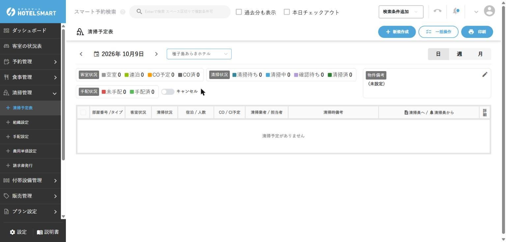

部屋の状態を正しくそろえる
客室・清掃
画面の表示と実際の客室状態を一致させ、未清掃の部屋への案内や二重割当を防ぎます。
1. 客室状況を確認する
左メニュー → 客室の状況表
- 画面の日付が今日になっていることを確認します。
- 到着予定、滞在中、出発予定、空室、ブロックの部屋を確認します。
- 本日到着予定で部屋が決まっていない予約を確認します。
- 未清掃のまま到着時刻が近い部屋を清掃担当へ伝えます。
色だけで判断しない必ず部屋番号、宿泊者名、宿泊日、画面に表示された状態名を読みます。
2. 清掃状況を確認・更新する
左メニュー → 清掃管理 → 清掃予定表
- 対象日が今日になっているか確認します。
- 対象の部屋番号と清掃予定を確認します。
- 清掃担当者から完了報告を受けます。
- 部屋番号をもう一度読み合わせてから、完了状態へ更新します（更新の操作は確認待ち）。
- 客室の状況表へ戻り、到着予定の部屋が案内可能か確認します。
左メニュー［清掃管理］の下は「清掃予定表／組織設定／手配設定／費用単価設定／請求書発行」です。清掃予定表は、物件を選ぶまで「物件を選択してください」と表示されます。日／週／月の切り替えと、「新規作成」「一括操作」「印刷」ボタンがあります（2026/10/09確認）。
上部に、客室状況（空室／連泊／CO予定／CO済）、清掃状況（清掃待ち／清掃中／確認待ち／清掃済）、手配状況（未手配／手配済）の件数が出ます。表の列は、部屋番号/タイプ、客室状況、清掃状況、宿泊/人数、CO/CI予定、清掃業者/担当者、清掃時備考、清掃員へ/清掃員からです（2026/10/09確認）。

清掃予定は確認待ち2026/10/09の種子島あらきホテルでは「清掃予定がありません」と表示され、チェックアウトした部屋も一覧に出ませんでした（2026/10/09確認）。清掃予定は自動では作られていないため、使う場合は「新規作成」や「手配設定」での準備が必要と考えられます（未確認）。
報告前に「清掃完了」にしない画面上だけ完了にすると、未清掃の客室へお客様を案内する事故につながります。
完了の目安「実際の部屋」「清掃担当の認識」「PMSの表示」の3つが一致しています。
3. 滞在中のお客様が部屋を移る
- お客様の予約詳細を開き、移動する日付を確認します。
- 移動先の部屋が空室・清掃済みで、ブロックされていないことを確認します。
- 移動日以降の部屋割りを変更します。
- 宿泊日、旧部屋、新部屋、料金が意図どおりか確認して保存します。
- 鍵を交換し、旧部屋の鍵を回収します。
- 清掃担当と次のシフトへ、旧部屋・新部屋・移動日を共有します。
予約を作り直さない連泊途中の部屋移動は、公式PDFでは予約内の「宿泊変更」から行います。別予約を作ると料金・宿泊者・精算が分かれるため、自己判断で作り直しません。
4. 客室をブロックする
故障、修繕、館内利用などで販売・割当を止めるときに使います。
物件管理 → 物件情報 → 対象客室の詳細 → ブロック設定
- 対象の部屋番号、開始日時、終了日時を確認します。
- 同じ期間に予約が入っていないか確認します。
- 故障などの理由と解除予定を記録します。
- ブロックを登録します。
- 客室の状況表で、対象期間がブロック表示になったことを確認します。
- 引継ぎへ「部屋・理由・期間・解除判断者」を残します。
予約済み・締め済み期間には設定できません予約を勝手に移動したり、期間を変えて無理に登録したりせず、責任者へ相談します。
5. 変更を共有する
| 変更 | 伝える相手 | 伝える内容 |
|---|---|---|
| 部屋変更 | 清掃担当・次シフト | 旧部屋、新部屋、移動日、鍵回収 |
| 延泊・早出 | 清掃担当・会計担当 | 新しい出発日、清掃日、料金への影響 |
| 故障・ブロック | 責任者・清掃担当 | 部屋、理由、期間、代替対応 |
| 貸出品 | 次シフト | 品名、貸出先、返却予定 |
基本ルール画面を直しただけで終わらず、相手が情報を受け取ったことまで確認します。
現在あらきホテルで使用しない機能
食事管理は、現在あらきホテルでは食事を提供していないため、通常業務では使用しません。
誤って開いた場合食事状況表・食事場所関連の画面では登録や変更を行わず、左メニューから必要な画面へ戻ってください。将来食事提供を開始する場合に、別途手順を整備します。